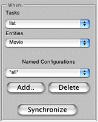
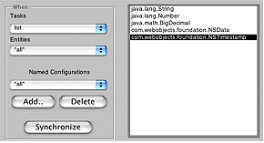

| PATH |

Expert mode is similar to standard mode, except that it allows you to make changes to any page in your application whether it is currently displayed in your browser or not. If you click the Expert mode button at the bottom of the WebAssistant, the window expands the following interface:
The tasks pop-up list shows the types of pages available in Direct to Web. The Entities pop-up list shows the entities in the model.
To customize any page in your application, simply select the type of page and the entity. The figure above shows an example of choosing the list page for the Movie entity, making the WebAssistant focus on this page rather than the page currently showing in the browser.
If you select "*all*" under Tasks, any changes you make affect all customizable pages for the selected entity. If you select "*all*" under Entities, you'll see a list of data types that exist in the application, as shown in the following figure.
Any changes you make affect all occurrences of that type. For example, the figure shows NSTimestamp selected. You can specify a formatter, and pick a component to use anywhere in the application that an NSTimestamp object is displayed.
If you click Synchronize, the task and entity for the current browser page are selected in the WebAssistant.
You can also select the Page pane in the WebAssistant window while in Expert mode and change the underlying component, color, and border thickness of whatever page for whatever entity you select in the Tasks and Entities pop-up menus.
Once you have customized a page, you can capture the settings in a named configuration. Named configurations are used when you need to display more than one type of page for a particular task and entity. Consider a page that lists movies for a video rental store. A customer would want to see the names of the movies and plot summaries. A store clerk would want to see how many copies are available for rental and how long they can be rented. In addition, the customer should not be able to edit any information, while the store clerk might be able to edit some properties. To set up such a system, you create two named configurations for listing movies: one for the customer and the other for the store clerk.
Named configurations can only be displayed programmatically; the WebAssistant can edit named configurations but can't display the changes in your browser.
To create a new named configuration follow these steps:
A panel appears with a text field containing a default name for the configuration (the page name followed by the entity name).
To edit a named configuration, select it from the Named Configurations pop-up list, make the changes, and click Save.
To delete a named configuration, select it from the Named Configurations pop-up list and click Delete.
© 2001 Apple Computer, Inc.